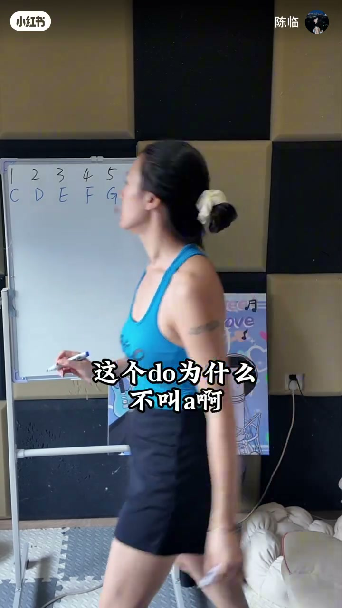
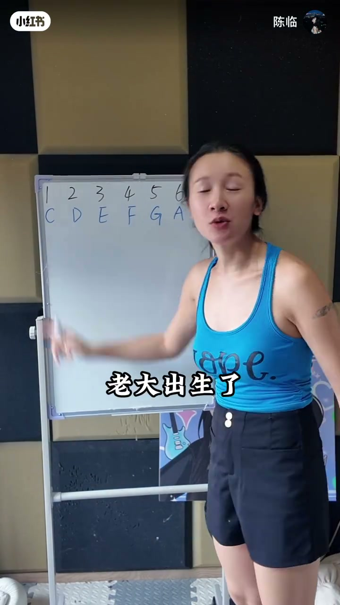
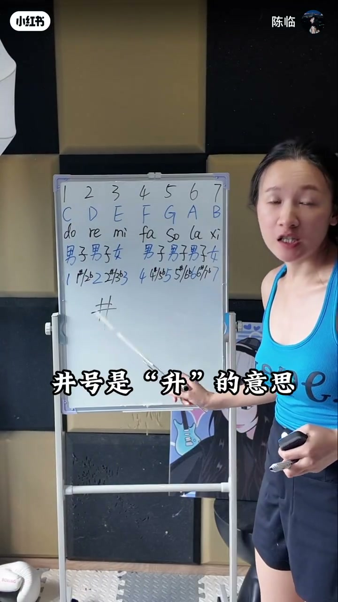
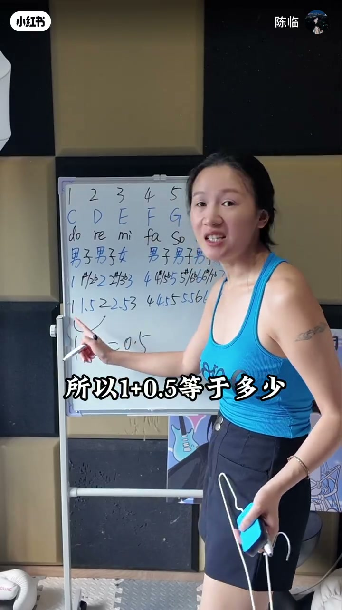
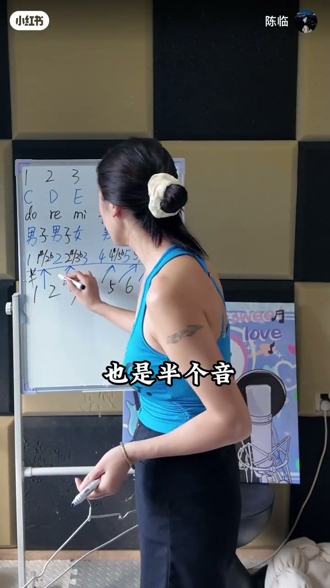
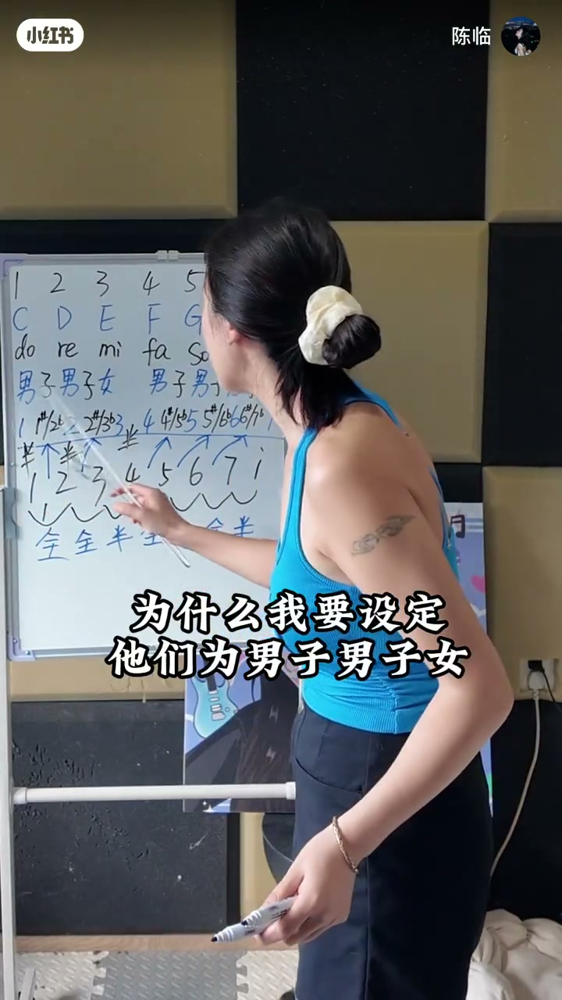

内容要点
「陈临」白板课回答初学者连环追问：do 为什么不叫 A、升号井号是什么、降号 b 怎么写。用「七个孩子／男子男子女」记忆十二个半音位置，再落到大调「全全半全全全半」。口播偏繁体 ASR，下文按白板与字幕校正为简体。
知识结构
do re mi…对应 C D E F G A B；学员问「do 为什么不叫 A」。
用老大出生「我出生了」类比兴奋记忆；七个孩子对应七个自然音。
井号=升；升 do／升 re；do 与升 do 相隔半音，用 1.5 心算。
b 是降号：降 re／降 mi；同一半音可用升或降记法。
回到男子男子女：女生后不带子，对应 3–4、7–1 半音，串成全全半全全全半。
先认七个自然音字母，再用「男／女」记住哪里没有半音孩子；升降只是半音记法，大调骨架最终是全全半全全全半。
00:00-00:30唱名字母对照，与「为什么不叫 A」
开场唱 do re mi fa sol la si，并写出英文名 C D E F G A B。学员追问：这个 do 为什么不叫 A？老师用「这个字为什么叫陈」类比——命名是历史约定，不是她发明的；若能改名她也想叫 A。
语气轻松，目的是先消掉「字母必须从 A 对齐唱名」的执念，再进入可记的口诀。

00:30-01:05七个孩子：把七音记成人
她给出记忆法：七个孩子，老大出生很兴奋——「我出生了」。白板在 1–7 下方标「男／女」，把音级拟人化，方便后面讲「谁后面带子、谁不带」。
强调：七个孩子，但一共有十二个键（半音）。自然音只是七个，中间还有升／降音位。

01:05-02:00升号井号与半音距离
学员问井号什么意思：井号是「升」。在 do 右上角写 # 就是升 do；在 re 上写就是升 re。do 与升 do 之间是半音关系。
她用算术辅助：「一和二之间相隔一，一半是 0.5；一加 0.5、二减 0.5 都落到 1.5」——把半音想成相邻整数中间的位置。这是助记，不是正式音程课。


02:00-03:04降号、全全半，与「女生不带子」
b 是降号：写在 2／3 右上角分别是降 re、降 mi。她承认直接背「全全半」对有些人很难接，所以才设计男子男子女口诀。
关键句：女子后面不带子——对应大调里 3–4、7–1 没有「半音孩子」，于是整体关系是全全半全全全半。收束反复确认「能不能明白」。


完整转录（100段）
以下文本由 Whisper medium 模型自动转录，可能存在少量识别误差，已尽可能修正。
Dora me fa sola si
还有英文名C E E F G A B
有人问了老实
这个多么什么不叫A啊
我也想他叫A啊
他为什么不叫A啊
那我问你们为什么这个字叫陈啊
来告诉我
为什么这个字叫陈啊
为什么
这是以前的人创造的啊
不是我创造的啊
宝宝们
我要是能创造
我就管他叫A啊
所以
我给你们想了一个
很好记的办法
七个孩子
老大出生了
对不对
很兴奋
我出生了
这样去记
你有没有明白
这里能明白了啊
不要再问我了
老师为什么他不是A啊
我也不知道
我也很痛苦
男孩
男孩
女孩
男孩
男孩又叫什么
儿子的子
女孩
不叫子
就叫女
所以
一共七个孩子
但是有十二个健
好
有人问
老师
这个井号是什么意思
井号是
深的意思
这是多
对不对
在多上面深
所以他叫什么
他叫深多
在二的右上角
画个几合件
叫什么
叫深ray
那么多和深多之间
是什么关系啊
你把它当成1.5
明白意思吗
一和二之间相隔几
相隔一个数字
对不对
二减一等于一对不对
一等一半是多少
所以
一加0.5等于多少
等于1.5
二减0.5等于1.5
所以这个B是什么意思啊
这个B是酱号的意思
你把这个B
画在这个二的右上角
它叫什么
它叫酱ray
你如果把这个B
画在这个三的右上角
那它叫什么
它叫酱B
到此为止能不能明白
所以多和深多
直接讲他们全全半
全全半不就好了吗
不是每个人脑子
都算你这么好的
比如说我
我当时我是听不下来
很难接
真的很难接
所以回到开始
为什么我要设定他们为
男子男子女
男子男子女
因为三期女生节
女生后面是不带子的
这样好不好接
今天就讲到这里
能不能明白
P!